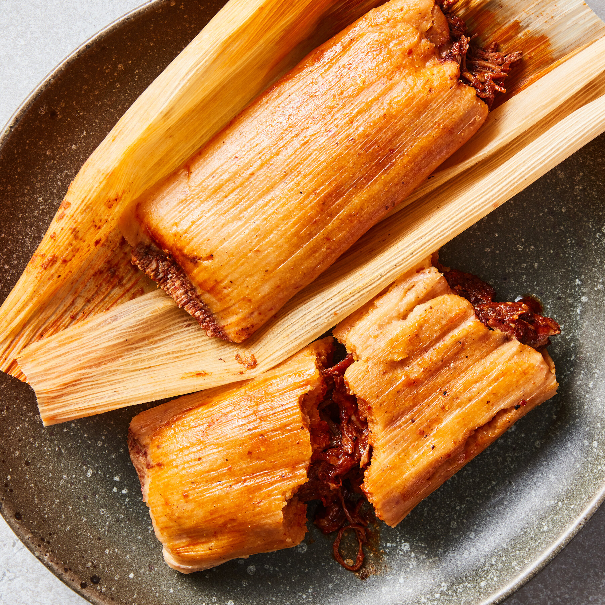

Pizza - A dish of Italian origin consisting of a usually round, flat base of leavened wheat-based dough topped with tomatoes, cheese, and often various other ingredients.
Pizza
Tamales - A Mexican dish of seasoned meat wrapped in cornmeal dough.

Tamales
Burgers - A sandwich consisting of one or more cooked patties of ground meat, usually beef, placed inside a sliced bread roll or bun.
Burger
Wings - Fried or baked chicken wings, often coated in flavorful sauces like buffalo, barbecue, or garlic parmesan.
Wings (specifically Wingstop)